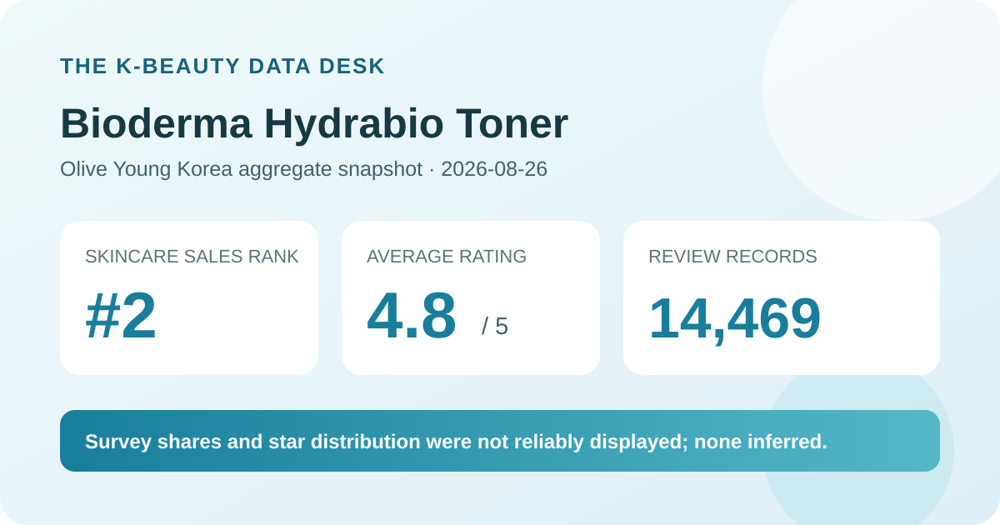
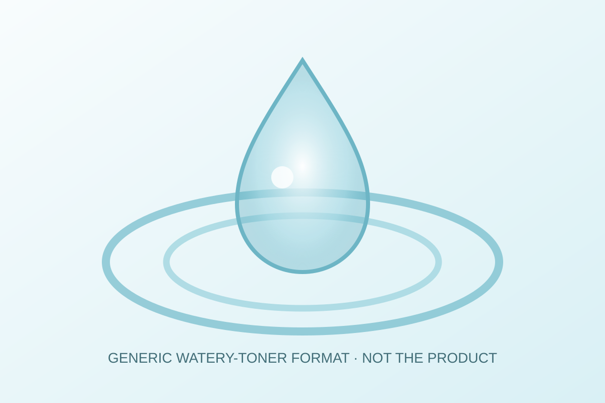

Data captured August 26, 2026. This article uses only the retailer's displayed product title, sales rank, aggregate rating, review count, category labels, and dated price display. No individual review, reviewer name, product photograph, or user photograph is reproduced or translated. I did not test the product.

The short version: Bioderma Hydrabio Toner ranked second in the captured Olive Young Korea skincare sales list and displayed 4.8 out of 5 from 14,469 review records. That is a broad retail feedback base, but it is still an average rather than proof of hydration, tolerance, or fit.
A 4.8 average across 14,469 linked records is a strong descriptive signal inside this retailer's system. It says that many submitted ratings collectively landed near the high end of a five-point scale. Compared with a perfect score based on one or ten records, a five-figure base is less likely to swing dramatically when another rating arrives. That makes the headline useful for understanding the product's established retail feedback footprint.
Even so, an average compresses different experiences into one number. It does not show how many ratings were five, four, three, two, or one star, how the mix changed over time, which product sizes generated the records, or whether shoppers used the same routine. The review panel also noted that linked feedback may come from products with the same contents but different capacity, set configuration, gifts, or packaging. The count therefore belongs to a connected product-review pool, not necessarily only the exact two-bottle promotion shown on the capture date.
The product header and review tab agreed on the rating and count, which clears an important consistency check. Still, agreement between two retailer surfaces does not transform shopper feedback into clinical evidence. Ratings can reflect price, delivery, packaging, promotion, sensory preference, expectations, or customer service alongside perceptions of the formula.
The captured review screen did not expose a trustworthy five-to-one-star breakdown. A 4.8 average does not permit an exact reconstruction: many combinations of star shares can round to the same displayed average. Assigning a five-star percentage would therefore invent precision that the source did not provide. This article reports the average and denominator exactly as displayed and leaves the distribution unknown.
Because the poll shares were unusable, this post does not say that a percentage of reviewers had dry skin, sought moisture, or found the formula gentle. It also does not infer missing values from individual reviews. A label without a valid share is insufficient for comparing this toner with products whose full poll panels loaded correctly.

The retailer places the item in its skin and toner category and names it a toner. That supports a format classification, not a verified sensory description. I did not open, pour, apply, or layer the formula. This analysis therefore cannot confirm viscosity, slip, scent, tack, absorption time, residue, pilling, or compatibility with sunscreen and makeup.
A generic watery-toner illustration is included to make the format easy to recognize without copying a product photo. It must not be read as the actual liquid's color or behavior. If finish matters to you, evaluate the product within the routine and climate in which it will be used. Amount, application method, waiting time, other layers, and humidity can all change how a toner seems to perform.
Rank two means the listing was commercially prominent in one retailer's skincare sales list at a specific time. It does not mean second-best for every shopper. Ranking can be shaped by discounts, prominent placement, a live-shopping event, gifts, new-set timing, inventory, and brand demand. The captured page advertised a two-bottle set during a discount period and displayed multiple gift notices, all of which provide useful commercial context.
Rank and review volume answer different questions. The rank describes recent sales momentum; the review count describes the accumulated size of a linked feedback pool. Here both are large enough to justify attention, but neither identifies the causal reason for the score or establishes that the current promotion is a better value than another size. Unit price, amount likely to be used before expiry, shipping, and the exact contents at checkout matter more than the rank alone.
The Korean listing showed a ₩62,400 reference price and a ₩35,400 sale display for a 500 ml two-bottle promotion, equivalent to a displayed 10 ml price of ₩354. These are dated storefront figures, not a permanent price guarantee. Coupon eligibility, gifts, availability, and checkout totals can change quickly.
Before comparing the offer with a 250 ml bottle or another regional listing, confirm the total volume, number of bottles, seller, market-specific label, formula, expiry information, return terms, taxes, and shipping. A larger set can reduce the displayed unit price while increasing waste risk if it is not used in time. Buying more is not automatically better value.
This analysis did not independently capture and reconcile a complete ingredient list for every linked size and region. It does not estimate ingredient percentages or claim that the formula is fragrance-free, alcohol-free, essential-oil-free, non-comedogenic, pregnancy-compatible, or appropriate for eczema, rosacea, acne, allergy, or another medical concern. Product names and category placement are not substitutes for the current package label.
Likewise, a high shopper rating cannot prove that the toner increases skin hydration, repairs a barrier, reduces inflammation, or changes a clinical condition. Those would require defined outcomes and controlled evidence beyond a retail average. For a known sensitivity or active treatment, check the exact label you will receive and seek qualified advice when appropriate.
It is a well-supported retailer average in the narrow sense that 14,469 linked records were displayed. It is not a clinical result, and the missing star distribution limits deeper interpretation.
The interface named dry skin as a leading category but rendered its share as 0%, so this analysis does not use it as evidence of fit or performance.
Not necessarily. The review area indicated that feedback may be linked across the same contents with different capacity, set, gift, or packaging configurations.
No. It is a generic code-drawn format visual, not a product or user photograph and not evidence from testing.
Not necessarily. Verify the option, current promotion, coupon rules, seller, label, and checkout total.
Bioderma Hydrabio Toner was the highest-ranked valid unpublished candidate in the captured Olive Young Korea skincare list after the already-covered rank-one product was skipped. Its ranking and product titles matched, and two product surfaces agreed on 4.8 stars and 14,469 review records. No loading or access-block signal appeared.
The responsible conclusion is positive but bounded: this is an established retail feedback pool with a high average and strong current sales visibility. The source did not provide a reliable star distribution or usable survey shares, so this article does not invent them. Use the aggregate as shopping context, then verify the exact pack, current label, price, and personal tolerance independently.
← All reviews · Rankings · Skin-poll guide · Methodology
Published by The K-Beauty Data Desk · Aggregate data captured 2026-08-26. No individual review, name, product photo, or user photo is reproduced or translated, and I did not test the product. I received no free product and am not paid or approved by the brand. Check the dated source listing.
Data basis: the live Olive Young Korea skincare sales-ranking and product/review screens captured 2026-08-26. The product title, ranking position, rating, review count, price display, and category-label state are source facts. Interpretation and cautions are editorial.